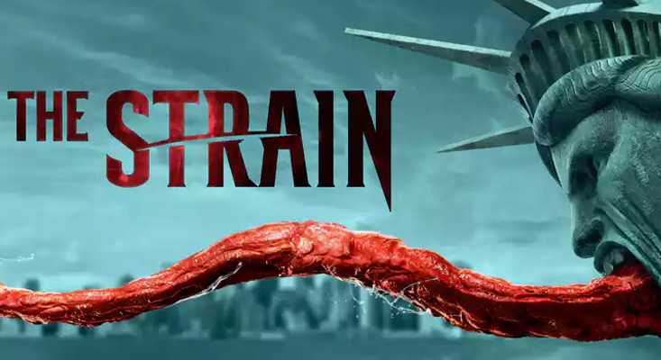
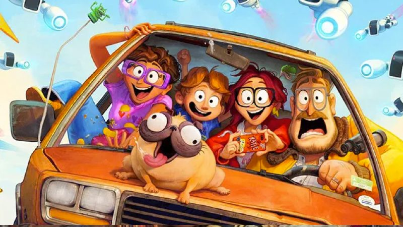
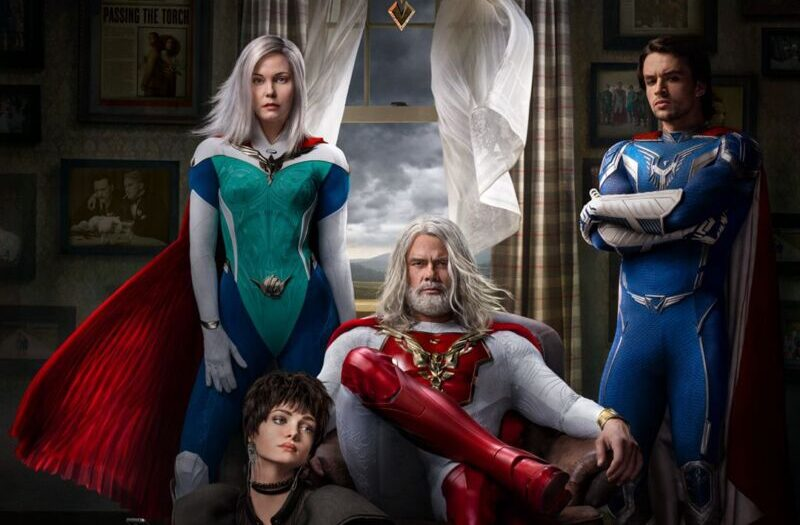
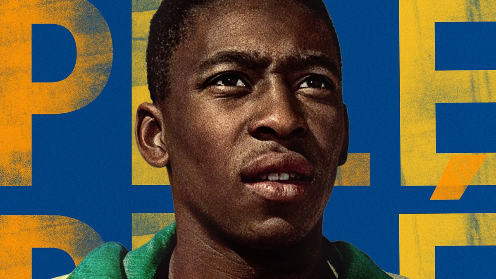
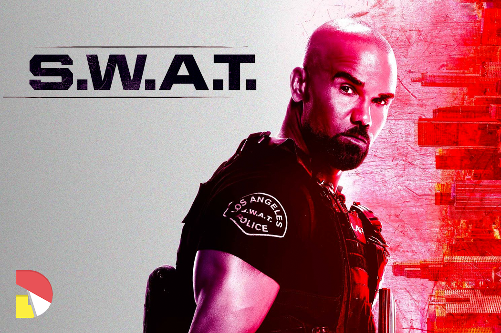
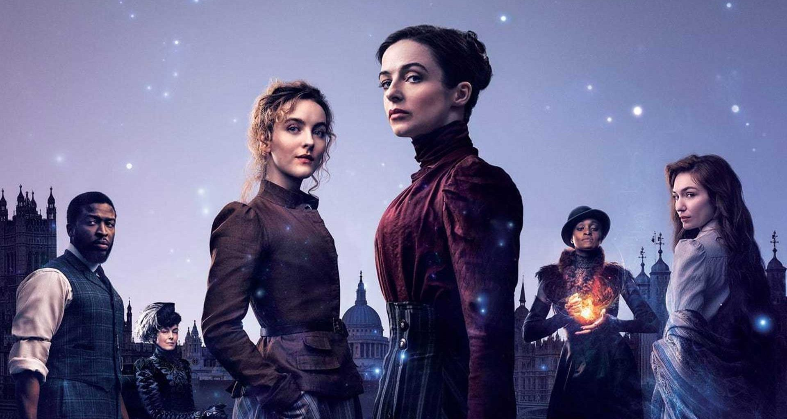
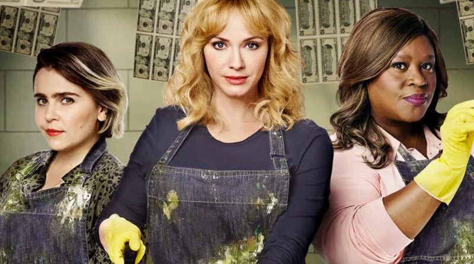

A Família Mitchell e a Revolta das Máquinas
The Blacklist
Mortal Kombat
Os Simpsons
Raya e o Último Dragão
Séries populares
The Blacklist
A série vai avançar alguns meses na estreia deste segundo ano para mostrar como a força-tarefa do FBI mudou com a morte da agente Malik e com a chegada de uma nova integrante. A equipe privada de Red também vai ganhar um reforço, com um novo membro em trabalhar com ele. O produtor executivo John Eisendrath contou ainda que a relação de Liz com esta nova pessoa será bastante amigável “como entre irmãs”.

The Strain
Um boeing 777 chega no aeroporto JFK, em Nova York, e enquanto está a meio caminho de pousar, de repente para completamente. Todas as persianas são baixadas, e as luzes desligadas. Os canais de comunicação, mas um alerta foi enviado ao Centro de Doenças (CDC). O Dr. Ephraim “Eph” Goodweather (Corey Stoll) recebe a chamada e embarca no avião. O que ele encontra faz seu sangue gelar.

Os Simpsons
The Simpsons é uma série de desenhos animados para a televisão que retrata o dia-a-dia de uma família americana. Criado pelo cartunista Matt Groening para a emissora FOX, foi exibido pela primeira vez em 1989. Através dos protagonistas Homer, Marge, Bart, Lisa e Maggie, o programa faz críticas ao comportamento humano, à sociedade e ao modo de vida americano.
SEAL Team
Treinamentos pesados e muita coragem. Esta é a rotina de uma equipe de elite da Marinha dos Estados Unidos, disposta a encarar as missões mais perigosas a fim de proteger o forma possível. O drama tem a ideia de contar a vida profissional e privada da unidade, que formam as principais forças das Operações Especiais da Marinha dos Estados Unidos, planejam e executam as mais perigosas que o país precisa.
The Flash
Barry Allen (Grant Gustin) era um funcionário da Polícia Científica que, ao sofrer um acidente, foi banhado por produtos químicos em seu laboratório e, em seguida, atingido por um raio. Foi a partir disso que ele começou a ser capaz de canalizar os poderes vindos do ”Campo de Velocidade”, e se locomover em altíssimas velocidades. Usando uma máscara e um uniforme vermelho, ele começa a usar suas habilidades.
Filmes populares

As Máquinas
Katie Mitchell é aceita na faculdade de cinema dos seus sonhos e seu pai decide aproveitar para realizar uma viagem em família para levá-la à universidade. Porém, seus planos são interrompidos por uma revolução robótica e agora os Mitchells terão que unir forças em família para trabalhar juntos para salvar o mundo.
Raya
O reino encantado Kumandra é dividido em cinco regiões e sua população venerava os dragões mágicos que eram presentes no reino, porém quando uma força maligna ameaçou a Terra, os dragões se sacrificaram para salvar a humanidade. Raya, rastrear o lendário último dragão para restaurar a terra fraturada e seu povo dividido.

Mortal Kombat
Nova aventura baseada no videogame Mortal Kombat. Na história, um jovem que nunca treinou artes marciais acaba envolvido em um gigantesco torneio de luta envolvendo guerreiros da Terra e lutadores que nunca treinou artes marciais acaba envolvido em um gigantesco torneio de luta envolvendo guerreiros da Terra e lue outras dimensões.

Júpiter
A primeira geração desses super-heróis manteve o mundo seguro por quase um século. Mas será que seus filhos vão conseguir carregar esse legado? A primeira geração desses super-heróis manteve o mundo seguro por quase um século. Mas será que seus filhos vão conseguir carregar esse legado? Mas será que vão conseguir carregar esse legado?

Pelé
Documentário que retrata a vida de Pelé, da busca pela perfeição à condição de mito. Abrangendo um extraordinário período de 12 anos, a produção mostra como o único jogador a vencer três Copas do Mundo passou de astro do futebol em 1958 a herói nacional em 1970, uma época radical e turbulenta no Brasil.
Em Destaque
Raya
O reino encantado Kumandra é dividido em cinco regiões e sua população venerava os dragões mágicos que eram presentes no reino, porém quando uma força maligna ameaçou a Terra, os dragões se sacrificaram para salvar a humanidade. Raya, rastrear o lendário último dragão para restaurar a terra fraturada e seu povo dividido.
Pelé
Documentário que retrata a vida de Pelé, da busca pela perfeição à condição de mito. Abrangendo um extraordinário período de 12 anos, a produção mostra como o único jogador a vencer três Copas do Mundo passou de astro do futebol em 1958 a herói nacional em 1970, uma época radical e turbulenta no Brasil.
Os Simpsons
The Simpsons é uma série de desenhos animados para a televisão que retrata o dia-a-dia de uma família americana. Criado pelo cartunista Matt Groening para a emissora FOX, foi exibido pela primeira vez em 1989. Através dos protagonistas Homer, Marge, Bart, Lisa e Maggie, o programa faz críticas ao comportamento humano, à sociedade e ao modo de vida americano.
The Strain
Um boeing 777 chega no aeroporto JFK, em Nova York, e enquanto está a meio caminho de pousar, de repente para completamente. Todas as luzes desligadas. Os canais de comunicação, foi enviado ao Centro de Doenças (CDC). O Dr. Ephraim “Eph” Goodweather (Corey Stoll) recebe a chamada e embarca no avião. O que ele encontra faz seu sangue gelar.
As Máquinas
Katie Mitchell é aceita na faculdade de cinema dos seus sonhos e seu pai decide aproveitar para realizar uma viagem em família para levá-la à universidade. Porém, seus planos são interrompidos por uma revolução robótica e agora os Mitchells terão que unir forças em família para trabalhar juntos para salvar o mundo.
Lançamentos
Júpiter
A primeira geração desses super-heróis manteve o mundo seguro por quase um século. Mas será que seus filhos vão conseguir carregar esse legado? A primeira geração desses super-heróis manteve o mundo seguro por quase um século. Mas será que seus filhos vão conseguir carregar esse legado? Mas será que seus filhos vão conseguir carregar esse legado?

S.W.A.T.
Um tenente do Esquadrão De Armas e Táticas Especiais recebe o comando de uma unidade de párias grosseiros, mas muito bem treinados. Sua equipe é chamada para resolver crimes de alta periculosidade sempre que todas as outras opções foram usadas. Secretamente, o tenente se sente em dúvida entre ser leal á corporação ou ás ruas das quais veio.

The Nevers
Nos últimos anos do reinado de Vitória, Londres é abalada por um fenômeno sobrenatural que dá a certas pessoas habilidades excepcionais. Cabe à Amalia True, uma viúva misteriosa e impulsiva, junto à Penance Adair, uma jovem inventora brilhante, proteger e abrigar esses “órfãos” habilidosos. Para isso, terão que enfrentar forças brutais determinadas a aniquilar sua espécie.
Pelé
Documentário que retrata a vida de Pelé, da busca pela perfeição à condição de mito. Abrangendo um extraordinário período de 12 anos, a no lorem impulse no impulse no lrem produção mostra como o único jogador a vencer três Copas do Mundo passou de astro do futebol em 1958 a herói nacional em 1970, uma época radical e turbulenta no Brasil.

Good Girls
Good Girls é protagonizado por Mae Whitman, Retta e Christina Hendricks. Três mulheres dedicadas aos filhos e aos no lorem impulse ni impulse no lorem esposos veem suas vidas mudarem ao se encontrarem em situações desesperadoras. Agora, pela primeira vez na vida, elas têm a oportunidade de jogar tudo para o ar, e é isto o que elas irão fazer.